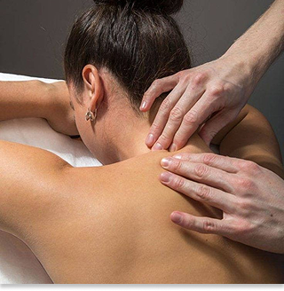

MARY LOPES
CORPO E MENTE


Massagem Terapêutica
A massagem terapêutica é uma técnica usada para aliviar dores, reduzir tensões musculares, melhorar a circulação sanguínea e promover o bem-estar físico , emocional e melhora sua qualidade de vida